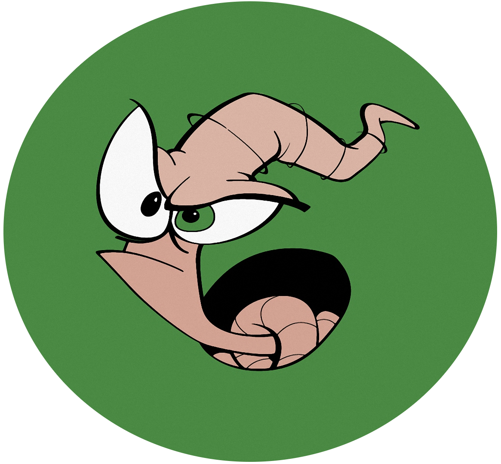

Lombricultura Paraná
El humus de lombriz, también conocido como vermicompost o compost de lombriz, se obtiene de un proceso denominado vermicompostaje, en el cual las lombrices digieren material orgánico, descomponiéndolo gracias a la acción de sus enzimas digestivas y de la microflora presente en su organismo.